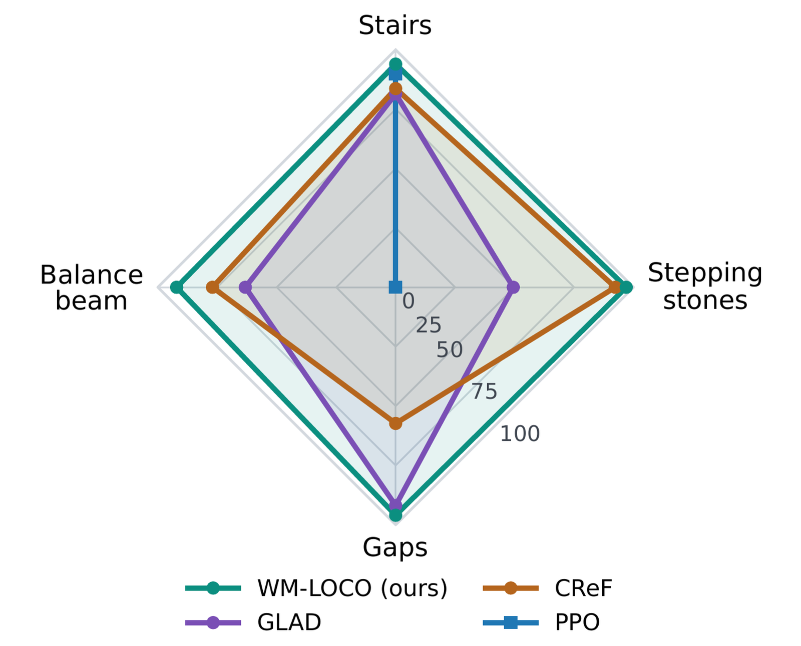
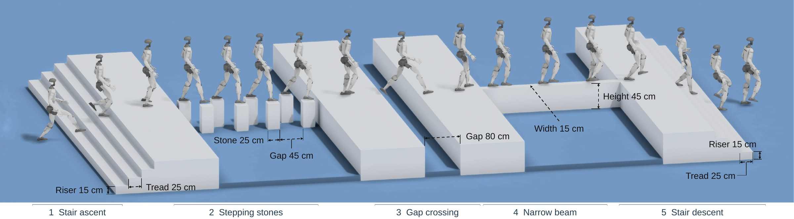
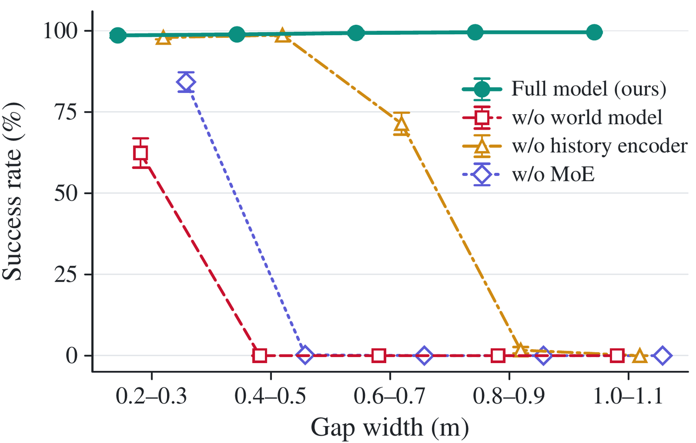
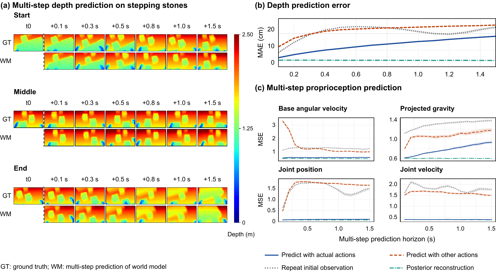
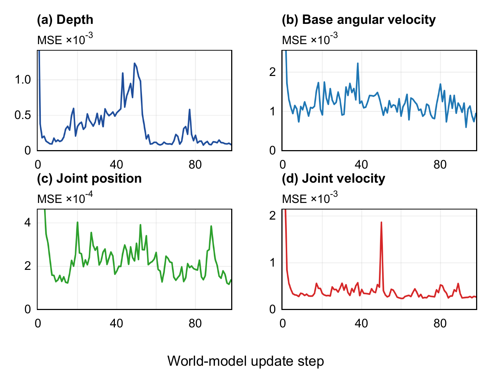

Predict
An RSSM encodes onboard depth and proprioception into a recurrent latent state and learns action-conditioned dynamics that predict future proprioception, egocentric depth, and task reward.
arXiv 2609.02542 · Humanoid Locomotion · World Models
1D-Robotics 2Beijing University of Posts and Telecommunications 3Harbin Institute of Technology 4Soochow University
01 / Framework
A recurrent world model, jointly trained with PPO, turns proprioception and a single onboard depth stream into a predictive recurrent feature—no offboard perception, no terrain map—so a Unitree G1 clears gaps, stepping stones, stairs, and balance beams.

An RSSM encodes onboard depth and proprioception into a recurrent latent state and learns action-conditioned dynamics that predict future proprioception, egocentric depth, and task reward.
A projection of the recurrent memory, fWMt = gψ(ht), feeds the PPO actor–critic. Depth reaches the policy only through this predictive feature.
One stage: LPPO + LWM from the start, without world-model pretraining. At deployment the actor acts directly—no model rollout, no action search.
02 / Abstract
Foothold-constrained terrain limits feasible footholds to sparse, discontinuous, or narrow support regions, as in gaps, stepping stones, stairs, and balance beams. In such settings, a single misplaced step can cause a fall. Reliable traversal therefore requires precise foot placement and anticipation of upcoming terrain.
To address this challenge, we present World-Model-Augmented Visual Locomotion (WM-LOCO), which augments a visual locomotion policy with predictive context from a jointly trained world model. Given onboard depth observations and proprioception, a recurrent state-space model (RSSM) learns action-conditioned latent dynamics that predict future proprioceptive states, egocentric observations, and task rewards. The resulting recurrent feature is then fed into the proximal policy optimization (PPO) actor–critic, providing predictive context for anticipatory foot placement on foothold-constrained terrain.
WM-LOCO achieves average success rates of 96.0% on gaps, 96.9% on stepping stones, 94.0% on stairs, and 92.1% on balance beams, outperforming the evaluated baselines while improving gait efficiency and smoothness. Furthermore, WM-LOCO achieves zero-shot sim-to-real transfer to a Unitree G1, with 92.5% success across these four terrain classes.
03 / Real-World Demo
Unitree G1, a single head-mounted depth stream, everything computed onboard. One clip per terrain class, plus the full demo video.
0.25 m stone tops, 0.45 m gaps
A 0.8 m gap between two platforms
0.10 m wide · front and side views
0.15 m risers, 0.25 m treads, up and down
Platform
Unitree G1 with a Jetson Orin. Proprioception and a single Intel RealSense D435 depth stream, all onboard—without offboard perception or a terrain map.
Real course
Stepping stones with 0.25 m tops and 0.45 m gaps, stairs with 0.15 m risers and 0.25 m treads, a 0.8 m gap, and a 3 m long, 0.10 m wide balance beam.
Outcome
92.5%37 / 40
Ten trials per terrain class, without additional tuning: zero-shot sim-to-real transfer.
04 / Results
Success rates in Isaac Lab simulation across four terrain classes at Easy, Medium, and Hard difficulty.
Riser height · 9.0–10.0 / 12.5–13.5 / 18.5–19.5 cm
Gap width · 0.40–0.55 / 0.90–1.10 / 1.80–2.00 m
Stone edge · 28.7–29.3 / 26.7–27.3 / 23.3–24.0 cm
Beam width · 29.6–32.3 / 18.8–21.5 / 8.0–10.7 cm
PPO (no WM) WM-LOCO (ours)
| Terrain | Difficulty | PPO | GLAD | CReF | WM-LOCO | Real |
|---|---|---|---|---|---|---|
| Stairs | Easy | 87.0% | 95.3% | 95.0% | 94.2% | 90% |
| Medium | 91.4% | 88.7% | 91.3% | 95.7% | ||
| Hard | 91.3% | 60.3% | 64.7% | 92.0% | ||
| Mean | 89.9% | 81.4% | 83.7% | 94.0% | ||
| Gap | Easy | 0.0% | 98.0% | 93.7% | 98.0% | 90% |
| Medium | 0.0% | 99.0% | 78.3% | 100.0% | ||
| Hard | 0.0% | 78.7% | 0.0% | 90.0% | ||
| Mean | 0.0% | 91.9% | 57.3% | 96.0% | ||
| Stepping stones | Easy | 0.0% | 76.0% | 94.3% | 97.1% | 100% |
| Medium | 0.0% | 64.7% | 94.0% | 97.3% | ||
| Hard | 0.0% | 7.7% | 88.7% | 96.4% | ||
| Mean | 0.0% | 49.4% | 92.3% | 96.9% | ||
| Balance beam | Easy | 0.0% | 99.0% | 95.3% | 99.0% | 90% |
| Medium | 0.0% | 90.7% | 94.7% | 96.7% | ||
| Hard | 0.0% | 0.0% | 41.1% | 80.7% | ||
| Mean | 0.0% | 63.2% | 77.0% | 92.1% |
Table 1 Success rates (%) for four methods and four terrains. Mean is the arithmetic average of Easy, Medium, and Hard; bold denotes the best simulation result in each row. GLAD uses global–local attention for terrain encoding of a robot-centric elevation map; CReF combines cross-modal attention with recurrent fusion of depth and proprioception. The PPO baseline shares the sensory inputs, rewards, proprioceptive encoder, adversarial motion prior, MoE backbone, and training budget, but omits the world model and its auxiliary loss. Real reports WM-LOCO hardware success at one fixed difficulty per terrain rather than separate tiers, over 10 trials per terrain class.
Baselines
WM-LOCO is the only method whose mean success exceeds 90% on every terrain class. Its four-terrain mean is 94.8%, compared with 71.5% for GLAD and 77.6% for CReF. GLAD degrades on stepping stones and beams, whereas CReF degrades most strongly on gaps.

Combined course

Ablation
The complete model achieves 98.6–99.6% success across the tested gap widths. Removing the world model reduces success to 0% for every width from 0.4–0.5 m onward; removing the MoE backbone also produces near-total failure beyond the smallest gap range, while removing the history encoder mainly impairs wider-gap traversal.

World-model validation
Given recorded actions, the world model predicts 15 updates (1.5 s) ahead without future observations. Its predicted depth stays closer to the Isaac Lab measurements than controls that repeat the initial observation or supply alternative actions, across the whole horizon. At 1.5 s, joint-position and joint-velocity errors remain close to the current-observation reconstruction reference; at 1.0 s, reward prediction reaches 0.072 MAE with 0.887 correlation.

Reconstruction reference
As a decoding reference, posterior reconstruction encodes and decodes the current observation at each update without a multi-step rollout. Errors remain low overall, with transient increases in depth and joint velocity, indicating that the latent state preserves information about the current observation.

Gait quality on stairs
On stairs both methods achieve high success, but WM-LOCO produces more efficient and smoother motion. Stride length increases by 25.6%, and pelvis acceleration decreases by 28.9%; these percentages are mean relative changes across the three tiers. Steps per meter and normalized mechanical energy also decrease at every tier.
| Metric | Unit | Easy | Medium | Hard | |||
|---|---|---|---|---|---|---|---|
| PPO | WM-LOCO | PPO | WM-LOCO | PPO | WM-LOCO | ||
| Stride length ↑ | m | 0.45 | 0.52 | 0.42 | 0.53 | 0.40 | 0.54 |
| Steps per meter ↓ | m−1 | 4.91 | 4.45 | 5.04 | 4.26 | 5.15 | 4.07 |
| Normalized mechanical energy ↓ | — | 1.01 | 0.95 | 1.21 | 1.01 | 1.43 | 1.14 |
| Pelvis acc. ↓ | m/s2 | 6.96 | 5.28 | 8.26 | 5.85 | 9.89 | 6.58 |
| Action-rate ↓ | — | 3.94 | 2.61 | 6.19 | 2.88 | 8.14 | 3.32 |
| Torque/limit | — | 0.56 | 0.59 | 0.62 | 0.63 | 0.67 | 0.66 |
Table 3 Stair gait, energy, and smoothness metrics per difficulty tier. Arrows indicate the preferred direction; bold denotes the better value in each row that has a preferred direction.
05 / Method
A recurrent world model jointly trained with PPO, supplying a predictive recurrent feature to the actor–critic.
At each control step the robot observes a short proprioceptive history pt (joint positions, joint velocities, base angular velocity, projected gravity, and previous actions), a depth image dt from a single head-mounted camera, and a commanded base-frame velocity ct. A history encoder embeds the proprioceptive inputs of the last H = 5 control steps. On foothold-constrained terrain a foot landing outside the available support can directly cause a fall, so the policy must anticipate upcoming support conditions.
A recurrent state-space model (RSSM) with deterministic memory ht and a discrete stochastic latent zt: a GRU transition advances the memory with the actions executed since the previous update, a prior predicts zt from the memory alone, a posterior additionally uses the current observation, and prediction heads reconstruct proprioception and depth and predict the task reward. A KL term matches the prior to the posterior; since the prior has no access to the current observation, this trains the dynamics to predict observation-informed states from preceding states and actions.
The joint objective is LPPO + LWM. Training starts jointly without world-model pretraining, and world-model gradients also update the observation encoders. At each control step a projection network maps the most recently updated memory to the policy feature fWMt = gψ(ht); proprioception and the velocity command enter the actor–critic directly, while depth enters only through fWMt. The world model updates at 10 Hz and the policy at 50 Hz. At deployment the actor outputs actions directly, without model rollout or action search.
A standard locomotion reward combines velocity and heading tracking with posture, gait, smoothness, energy, and joint-safety terms. Contact-region rewards, computed from foot-mesh sample points following Hiking in the Wild, discourage invalid foot placements: stairs use a boundary penalty, a riser-penetration penalty, and a sequential tread-contact reward; stepping stones use a top-contact reward whose window opens once per episode on sufficient contact and closes after a short duration or when contact is lost, after which the stone leaves the eligible set. The PPO baseline uses the same rewards.
06 / Citation
If WM-LOCO is useful in your research, please cite our paper.
@misc{liu2026wmloco,
title = {World-Model-Augmented Visual Locomotion for
Humanoids on Foothold-Constrained Terrain},
author = {Liu, Yuxi and Han, Lijun and Wang, Ziming and
Zhang, Ao and Yang, Cong and Sui, Wei},
year = {2026},
eprint = {2609.02542},
archivePrefix = {arXiv},
primaryClass = {cs.RO}
}Correspondence: wei.sui@d-robotics.cc